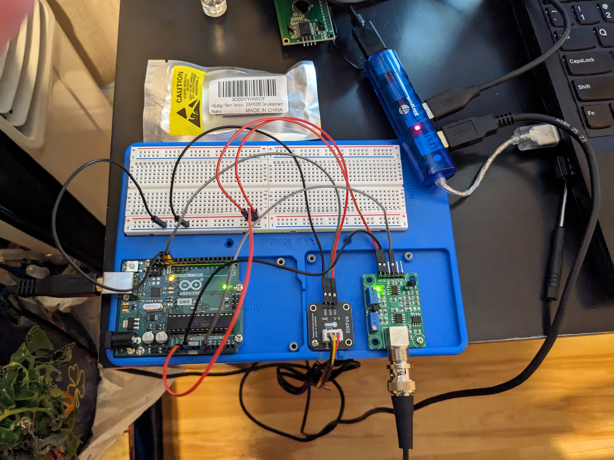
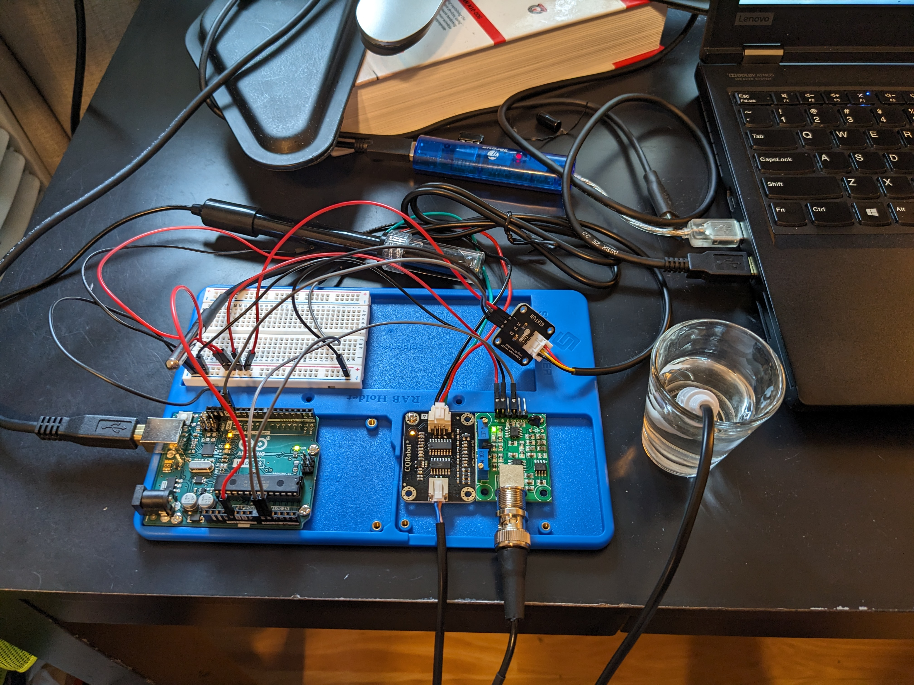
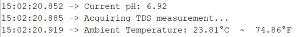
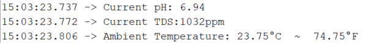

Week 6: Breadboard Wiring, Part Replacements, and Discovering Microservice Architecture Patterns.
Week 6 was mainly spent assembling the Greenhouse monitor breadboard circuit and investigating architecture patters to use with my ESP8266 transceiver module. I begain exploring microservice architectures with the help of a Udemy course: "Build, deploy, and scale an E-Commerce app using Microservices built with Node, React, Docker and Kubernetes". This lecture series pointed out key differences between microservice and monolithic architecture, and my aim is to develop the API accordance with these microservice patterns, in the hope of extending this application in the future using Node JS, React, or a different framework. My current architectural design idea is to write a driver program that will "harvest" sensor data at regular intervals and present this raw data to the serial bus where the messages can be read by the the recieving portion of the driver firmware and inserted as a well-constructed tuple into a SQL transaction database, then transform this raw sensor data into an aggregate measurement and populate an OLAP style data warehouse file via a trigger in order to satisfy the server GET and/or POST requests. I am hoping that further research into REST API architecture involving arduino sensors will offer further clarity.
Breadboard Basics

Figure 1.) Basic Arduino Breadboard circuit pinout diagram. The top and bottom power rails (red) are divided into 3.3V and 5V power supply sections. Ground rails are shown in blue and can be used by any circuit component requiring a ground. The center (green) pinout locations are reserved for circuit components, and for our intents and purposes acts as a serial communication hub.
Assembling, Calibrating, and Testing the pH Meter Function
First, I tracked down the following tutorial mentioning some of the parts I have on hand: "pH meter Arduino, pH Meter Calibration, DIYMORE pH Sensor Arduino Code". I decided to wire the positive and terminal leads to the breadboard in preparation for the serial hub integration that will come later in the project. Here is another article that came in handy: pH probe.
Once I placed the connections and verified a response from the pH sensor, I lined out a calibration curve using vinegar and milk as my stand-in calibration solutions (real calibration solutions are on the way) and applied a short circuit connection to the pH probe terminal to register a neutral (i.e., pH = 7) response from the pH probe. The result is a remarkably stable and robust pH meter, and I have been using it to monitor and adjust the pH of the nutrient solutions in both of my hydroponic systems! The program I currently have relays updates to the IDE serial monitor at a rate of around 2 Hz (2 updates/second). I also have a working driver sketch for the temperature probe, and I plan on combined these two programs, along with others in the final version of the driver sketch program.
Success!! A Working pH Meter and Thermocouple.
Figure 2.) One of the most exciting moments this week was getting the drivers for the pH meter and thermocouple up and running. Since I don't have any real calibrating solutions on hand at the moment, I decided to calibrate the pH probe using milk and vinegar. As awful as that sounds, the attempt went well and I managed to produce some surprisingly accurate values when I tested it with an off-curve calibration standard (pH=6.86).
// Hardware
const int analogInPin = A0; // Identity of the analog recieving pin
// Variables
float average_voltage, slope, intercept, pH;
int buf[10],temp,NUM_BINS,avg_reading;
unsigned long int avgValue; // declare the aggregator variable used to sample the pH.
// establish serial communication rate.
void setup() {
Serial.begin(9600);
}
// driver main loop.
void loop() {
for(int i=0;i<10;i++){
buf[i]=analogRead(analogInPin); // read the analog value from analog-in pin "A0", place the value in the buffer.
delay(30); // delay the next read for 30 ms.
}
for(int i=0;i<9;i++){
for(int j=i+1;j<10;j++){
if(buf[i]>buf[j]){ // This nested for-loop maintains buffer in ascending sorted order.
temp=buf[i];
buf[i]=buf[j];
buf[j]=temp;
}
}
}
avgValue=0;
for(int i=2;i<8;i++){ // sampling the middle 6 points of the sorted buffer reduces the effect of outliers.
avgValue+=buf[i];
}
int NUM_BINS = 6; // number of samples in the next average calculation.
int avg_reading = float(avgValue)/NUM_BINS;
float average_voltage = avg_reading*(5.0/1024); // discretize the phVoltage reading over a range of 5 volts.
float slope = -5.7; // slope of the calibration curve. represents the linear correlation between voltage and response. (Slope value given in the example code: -5.70)
float intercept = 29.68; // intercept. adjust to calibrate.
float pH = ( average_voltage * slope ) + intercept; // calculates the final pH value. Incercept is adjusted during calibration.
Serial.print("Current pH: ");
Serial.println(pH);
delay(500);
}
Week 7: Integrating Sensors and Formatting the Serial Monitor Output
During Week 7 I was able to combine drivers for pH, temperature and total dissolved solids (TDS) and collect streaming measurements from all three instruments at once in the serial monitor. I learned about baud rate synchronization this week when I discovered that Arduino TDS sensors typically operate at a 115200 baud rate frequency, which is 12 times higher than the pH or temperature probes typically operate. I managed to compensate for these differences in communication rates by modifying the TDS to operate at a 9600 baud rate, at the cost of some additional start-up time owing to the increased buffer time needed to collect TDS sensor measurements.
Figure 3.) Circuit connections for the pH/temperature/TDS serial monitor device.
Temperature, pH, and TDS Driver Sketch (Serial Output)
TDS driver functions shown below, were adapted from Arduino with TDS Sensor (Water Quality Sensor)
/* Thermocouple libraries, hardware, and driver variables.*/
#include OneWire.h
#include DallasTemperature.h
const int SENSOR_PIN = 13; // Arduino pin connected to DS18B20 (temperature) sensor's DQ pin
OneWire oneWire(SENSOR_PIN); // create a oneWire instance
DallasTemperature tempSensor(&oneWire); // pass oneWire to DallasTemperature library
float tempCelsius; // temperature in Celsius
float tempFahrenheit; // temperature in Fahrenheit
/* pH sensor libraries, hardware, and driver variables.*/
float average_voltage, slope, intercept, pH;
int buf[10],temp,NUM_BINS,avg_reading;
unsigned long int avgValue; // declare the aggregator variable used to sample the pH.
const int analogInPin = A0; // pH analog-in.
/* TDS sensor libraries, hardware, and driver variables.*/
#define TdsSensorPin A1
#define VREF 5.0 // analog reference voltage(Volt) of the ADC
#define SCOUNT 30 // sum of sample point
int analogBuffer[SCOUNT]; // store the analog value in the array, read from ADC
int analogBufferTemp[SCOUNT];
int analogBufferIndex = 0;
int copyIndex = 0;
float averageVoltage = 0;
float tdsValue = 0;
float temperature = 16; // current temperature for compensation
// median filtering algorithm
int getMedianNum(int bArray[], int iFilterLen){
int bTab[iFilterLen];
for (byte i = 0; i bTab[i + 1]) {
bTemp = bTab[i];
bTab[i] = bTab[i + 1];
bTab[i + 1] = bTemp;
}
}
}
if ((iFilterLen & 1) > 0){
bTemp = bTab[(iFilterLen - 1) / 2];
}
else {
bTemp = (bTab[iFilterLen / 2] + bTab[iFilterLen / 2 - 1]) / 2;
}
return bTemp;
}
void setup() {
Serial.begin(9600); // initialize Baud rate at 115200 (min. rate limit imposed by TDS sensor)
tempSensor.begin(); // DallasTemperature class function
pinMode(TdsSensorPin,INPUT);
}
// driver main loop.
void loop() {
static unsigned long analogSampleTimepoint = millis();
if(millis()-analogSampleTimepoint > 40U){ //every 40 milliseconds,read the analog value from the ADC
analogSampleTimepoint = millis();
analogBuffer[analogBufferIndex] = analogRead(TdsSensorPin); //read the analog value and store into the buffer
analogBufferIndex++;
if(analogBufferIndex == SCOUNT){
analogBufferIndex = 0;
}
}
static unsigned long printTimepoint = millis();
if(millis()-printTimepoint > 800U){
printTimepoint = millis();
for(copyIndex=0; copyIndexbuf[j]){ // this if statement manages the buffer in sorted order (usefule in e.g., monotonic and antimonotonic pattern recognition)
temp=buf[i];
buf[i]=buf[j];
buf[j]=temp;
}
}
}
avgValue=0;
for(int i=2;i<8;i++){
avgValue+=buf[i];
}
int NUM_BINS = 6; // number of readings in measurement
int avg_reading = float(avgValue)/NUM_BINS;
float average_voltage = avg_reading*(5.0/1024); // discretize the phVoltage reading
float slope = -5.7; // slope of the calibration curve. represents the linear correlation between voltage and response. (Slope value given in the example code: -5.70)
float intercept = 29.46; // intercept. adjust to calibrate.
float pH = ( average_voltage * slope ) + intercept; //
Serial.print("Current pH: ");
Serial.println(pH);
// print TDS, alternate message displays during start-up.
// Serial.print("voltage:");
// Serial.print(averageVoltage,2);
// Serial.print("V ");
if (averageVoltage == 0) { // tds takes a few seconds to stabilize. Alert the user about probe condition.
Serial.print("Acquiring TDS measurement... \n"); // this message is displayed until a response is generated from the TDS sensor.
}
else {
Serial.print("Current TDS:");
Serial.print(tdsValue,0); // will read "0ppm" until the TDS meter stabilizes
Serial.println("ppm");
}
// print Temperature (C + F)
Serial.print("Ambient Temperature: ");
Serial.print(tempCelsius); // print the temperature in Celsius
Serial.print("°C");
Serial.print(" ~ "); // separator between Celsius and Fahrenheit
Serial.print(tempFahrenheit); // print the temperature in Fahrenheit
Serial.println("°F");
delay(1000); // delay for the combined system
}

Figure 4.) Serial monitor output displaying the default start up TDS meter response. The pH meter has been calibrated and is currently held in a pH testing standard (6.86) that was not used in the calibration and has been used to house the pH probe for a couple of days.
Figure 5.) Serial monitor output displaying an initial measurement of the TDS probe after equilibration. This nutrient solution was replaced about 2 days ago, so this is TDS measurement should represent a nice baseline. The pH measurement is from 2-day old 6.86 pH buffer solution. The water from my refrigerator registers at 180ppm (TDS units) on this device.
An electromagnetic interference appears to occur in the pH probe whenever it is held in the same nutrient solution as the TDS sensor. This happens because of the way each meter performs its' task. TDS operates on a principle that is sometimes referred to as "amperage-driven voltage detection". Essentially, the TDS meter tests the conductivity of the solution by emitting tiny pulses of electric current and reading the voltage accross the anode/cathode gap. The pH probe uses the principle of passive voltage detection to measure the relative concentration of cations (i.e., H+) and anions (i.e., OH-) in the solution. Placing the pH and TDS meters in the same solution causes the pH probe to act erratically, due to the percieved abundance of negative charge released by the cathode of the TDS sensor. This excess current registers in the pH meters' passive voltage scale as an abundance of anions in solution, causing it to report a falsely elevated pH.
Given this observation it appears reasonable to assume that maintaining the pH and TDS probes on seperate Baud frequencies could offset the effect of this interference. After testing this hypothesis, I concluded that the pH and TDS meter can share no more than two of the following three testing conditions with each other: {baud_rate, test_solution, time_period}. Running the sensors on different baud rates is not an option, because the serial monitor can maintain only one Baud rate frequency at a time. Making time-scale decoupling the only option for creating a stand-alone measurement system with all three sensors.
Since I maintain both of my hydroponic systems identically, the measurements these systems produce may be considered equivalent within a negligible margin of error (i.e., less than 10%). Given this fact, I have decided to temporarily resolve this system timing issue by placing the TDS sensor in the other system reservior, which should provide a reasonable "best of both worlds" solution at the cost of staking the accuracy of these measurements on the precision of my solution preps.
This should provide a relatively accurate estimate of system pH and TDS measurements in each unit, while allowing the pH and TDS sensors to remain online and operate simultaneously. I plan to revisit this issue of time-scale decoupling once the online API, dashboard, and database have been developed.
Week 8: Building Full-Stack Web Applications Using Node.js, REACT, and Firebase (by Google)
This week, I located the following web resources for designing the REST API for the greenhouse monitoring station.
- ESP8266 NodeMCU: Getting Started with Firebase (Realtime Database)
- ESP8266 NodeMCU with Firebase – Creating a Web App
- Hosting REACT application using GitHub Pages (GitHub Tutorial Repository)
According to Wikipedia:
"Firebase is a set of backend cloud computing services and application development platforms provided by Google. It hosts databases, services, authentication, and integration for a variety of applications, including Android, iOS, JavaScript, Node.js, Java, Unity, PHP, and C++"